Andrew Black
Skórzana, klasyczna konstrukcja do cięższych warunków i częstego brodzenia.
Buty brodzeniowe do fly fishingu
Wytrzymałe buty wędkarskie z wysoką cholewką, mocnym otokiem i podeszwami przygotowanymi na kamienie, żwir, muł i śliskie brzegi.
Andrew Technology Quality
Cholewka chroni kostkę, gumowy otok zabezpiecza przód i bok buta, a metalowe oczka ułatwiają mocne sznurowanie nawet po całym dniu nad wodą.
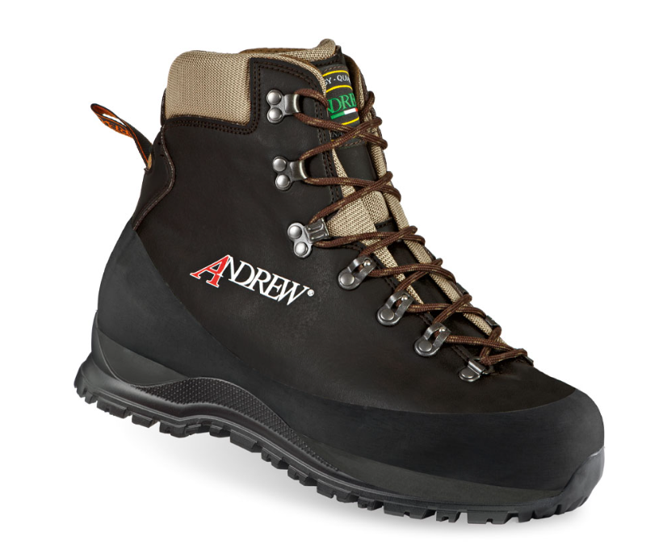
Modele Andrew
Skórzana, klasyczna konstrukcja do cięższych warunków i częstego brodzenia.
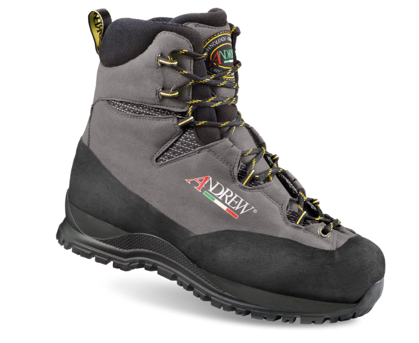
Lżejszy wariant z tekstylnymi panelami i stabilnym trzymaniem stopy.
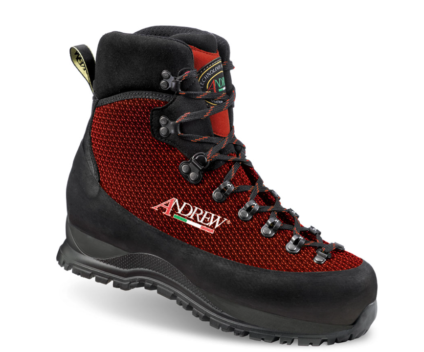
Widoczny czerwony materiał, mocna podeszwa i pełna ochrona palców.
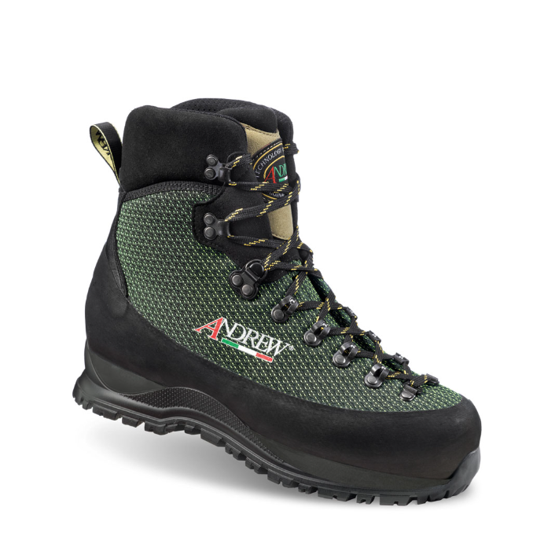
Stonowany kolor do terenowego zestawu, z wysoką cholewką i solidnym sznurowaniem.
Przyczepność
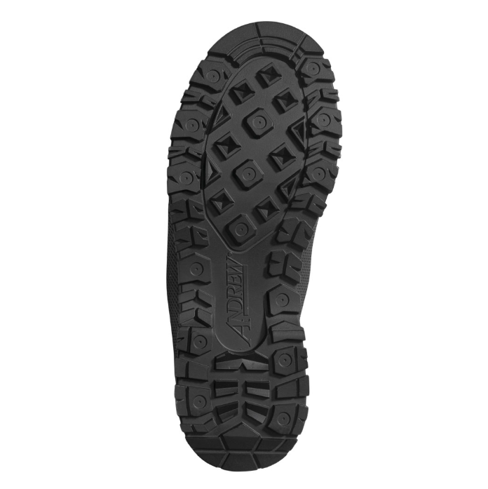
Głęboki bieżnik na brzegi, kamienie i dojścia do łowiska.
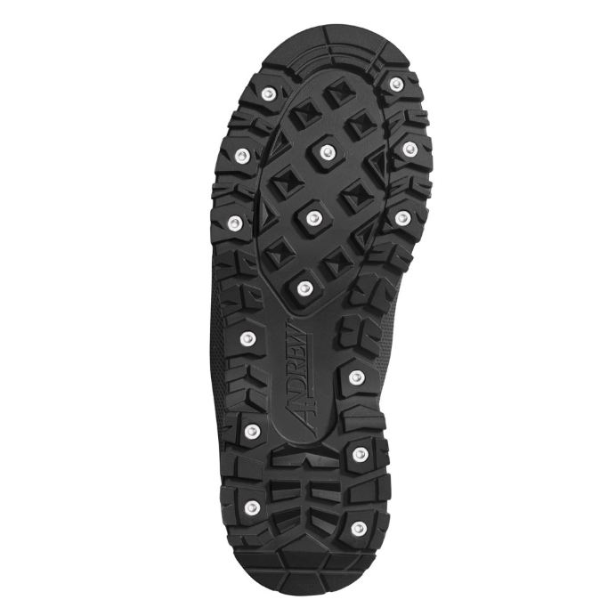
Dodatkowe metalowe punkty kontaktu na śliskie kamienie i mocny nurt.
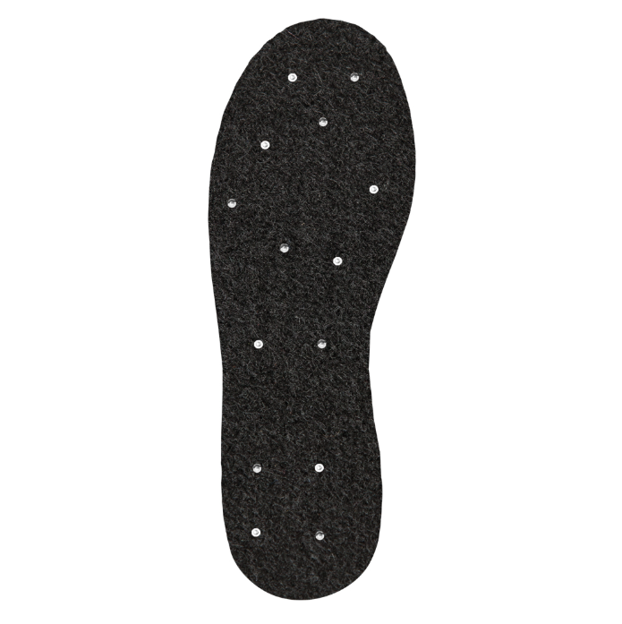
Opcja na mokre, gładkie podłoże, gdzie liczy się maksymalna kontrola kroku.
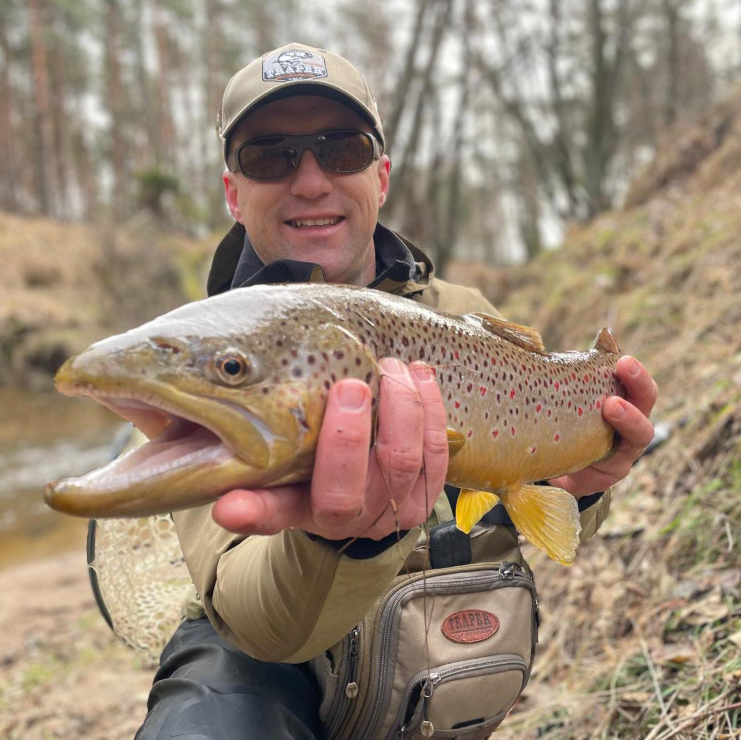
Carpatian Fly Fishing
Buty Andrew pasują do brodzenia przy pstrągach, lipieniach i całodniowym chodzeniu po wodzie. O rozmiar, podeszwę i aktualną dostępność najlepiej zapytać bezpośrednio na profilu.
Napisz na FacebookuGaleria
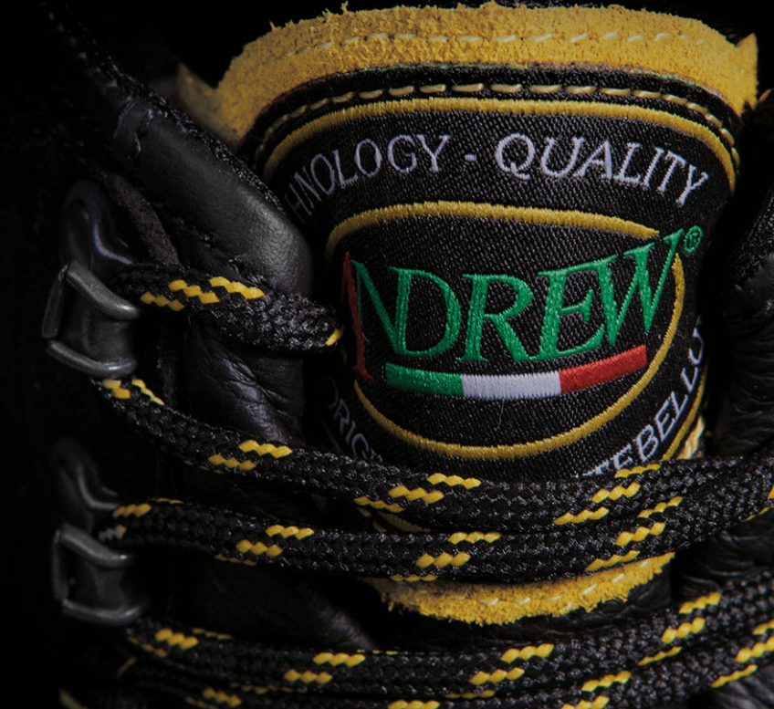
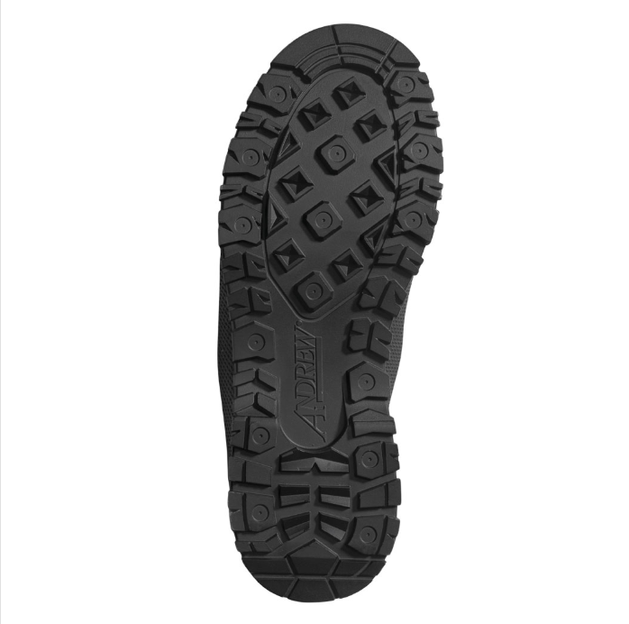
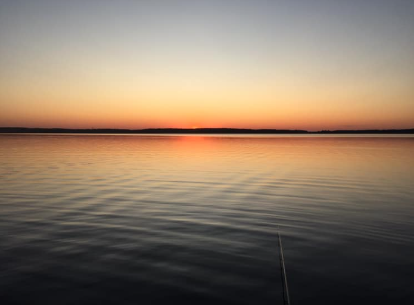
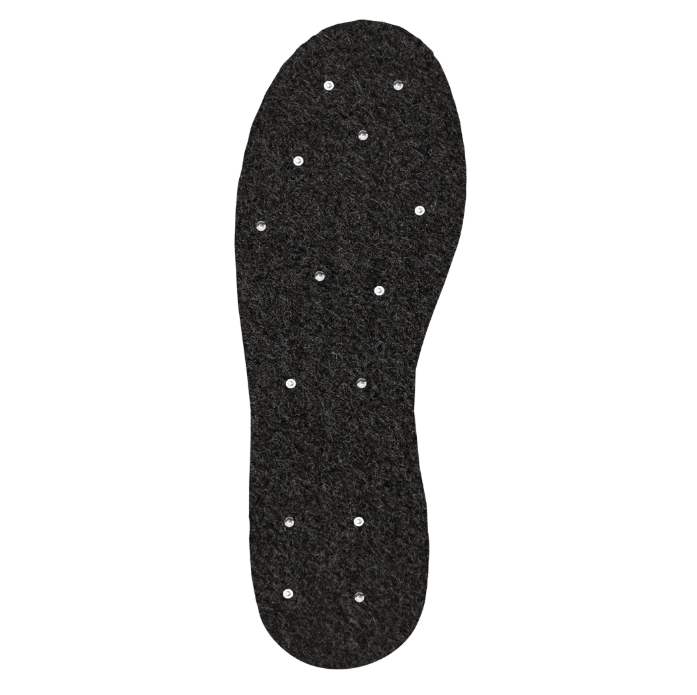
Zamówienia i kontakt
Kliknij przycisk i przejdź do Carpatian Fly Fishing na Facebooku.
Przejdź do Facebooka